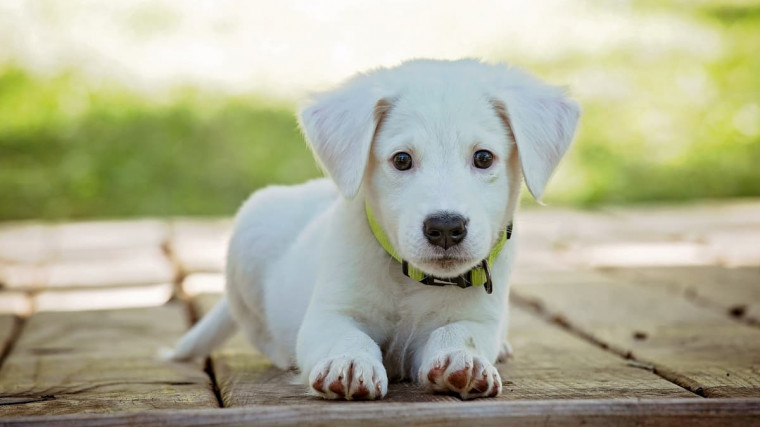
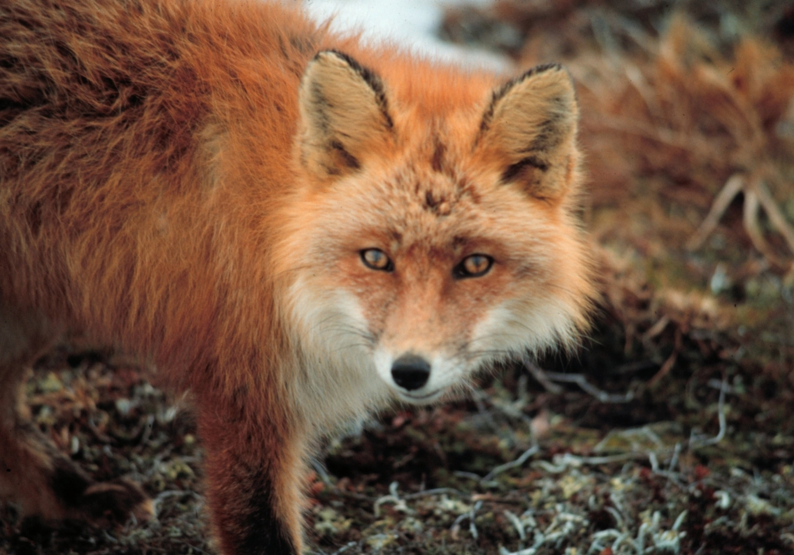
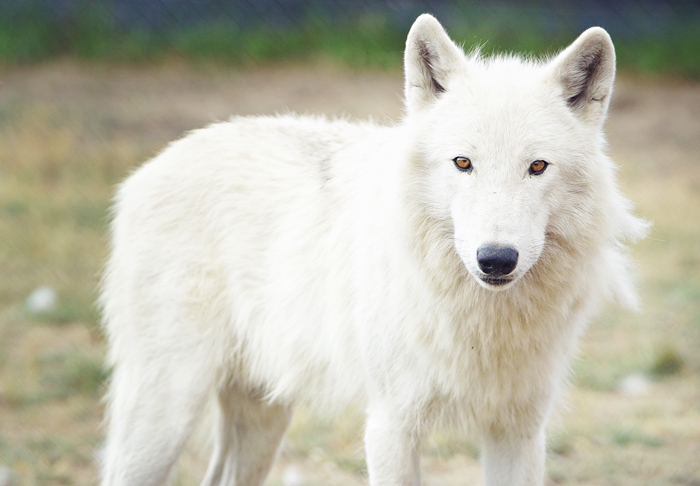
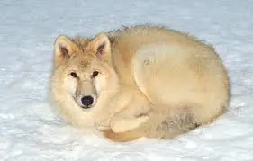

Psy domowe - domowiony gatunek (lub podgatunek) ssaka drapieżnego z rodziny psowatych (Canidae), traktowany przez niektóre ujęcia systematyczne za podgatunek wilka, a przez inne za odrębny gatunek, opisywany pod synonimicznymi nazwami Canis lupus familiaris lub Canis familiaris. Od czasu jego udomowienia powstało wiele ras, znacznie różniących się morfologią i cechami użytkowymi. Rasy pierwotne powstawały głównie w wyniku presji środowiskowej. Rasy współczesne uzyskano w wyniku doboru sztucznego. Przez ISSG (Invasive Species Specialist Group) jest uznawany za gatunek inwazyjny.
Lisy - nazwa zwyczajowa oznaczająca drapieżnego ssaka z rodzaju Vulpes, najczęściej stosowana w odniesieniu do gatunku Vulpes vulpes (w języku polskim zwanego lisem pospolitym, lisem rudym lub po prostu lisem), a także przedstawicieli innych gatunków, podobnych do lisa, a zaliczanych do rodzajów: Alopex, Dusicyon i Urocyon.
gatunek drapieżnego ssaka z rodziny psowatych (Canidae), zamieszkującego lasy, równiny, tereny bagienne oraz góry Eurazji i Ameryki Północnej. Gatunek o skłonnościach terytorialnych. Zwykle terytorium zajmowane przez watahę to 100–300 km², ale wielkość ta zależy od dostępności pokarmu i terenu. Może występować współużytkowanie części terenu przez dwie konkurujące watahy. Wilk jest w stanie w dobę pokonać dystans kilkudziesięciu kilometrów. W poszukiwaniu partnerki samiec potrafi w ciągu 2 tygodni przebyć ponad 600 km
| Nazwa | Rodzina | Kręgowiec czy bezkręgowiec | Udomowienie |
|---|---|---|---|
| Pies domowy | Psowate(Canidae) | Kręgowiec | Całkowite |
| Lisy | Vulpes | Kręgowiec | Częsciowo |
| Wilk biały | Psowate(Canidae) | Kręgowiec | Praktycznie wogóle |
| Wilk Polarny | Psowate(Canidae) | Kręgowiec | wogóle |